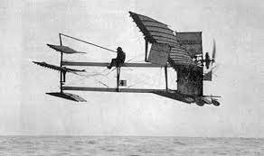

Note: Un hydravion est un type d'avion construit pour être capable de décoller, depuis la surface de la mer, et d'amerrir. Le terme vient d'ailleurs du grec hydor signifiant « eau », et du latin avis qui signifie « oiseau ».
le premier hydro-aeroplane décollait sur l’étang de Berre : le Marseillais Henri Fabre était aux commandes d'un appareil de sa conception, baptisé par dérision "le canard". Cette étrange machine vola sur 800 mètres avant de se reposer sur l’eau
Elle reposait sur trois flotteurs convexes à fond plat, dotée de deux ailes à fort dièdre positif, d'une envergure de 15 mètres pour une surface portante de 24m² et une masse de 475 kg. Les gouvernes étaient placées à l'avant et le moteur propulsif (un Gnôme de 50 CV), à l'arrière. Le poste de conduite était situé sur le longeron central sur lequel le pilote s'installait à cheval.

Henri Fabre, qui n'avait jamais volé auparavant, parvient à faire décoller son "canard" après une accélération de 300 mètres sur la surface de l'eau. Il va le maintenir à 5 mètres au-dessus de l'étang, sur une distance d'environ 500 m, puis se pose sans dommage.
Il réussira cinq autres vols le même jour dont deux seront homologués officiellement. Réalisé sept ans seulement après le premier vol historique d’un avion par les frères Wright, ce premier décollage/amerrissage constitue pour l’époque un véritable exploit.
Depuis cette époque les hydravions connurent un développement tout à fait comparable à celui des avions proprement dits. La différence entre ces deux types de véhicules est que, par le fait même qu'il flotte puis qu'il déjauge lors de son décollage, l'hydravion pose aux constructeurs un certain nombre de problèmes d'hydrodynamique qui viennent s'ajouter aux problèmes d'aérodynamiques propres à l'aviation.
source: aquitaine online